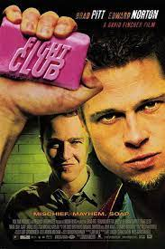
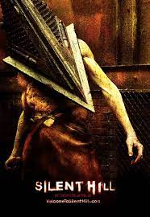
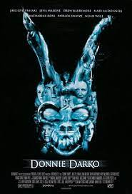
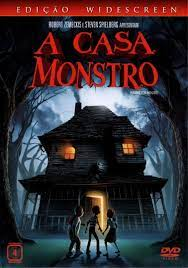

A Gomu Gomu no Mi é uma Akuma no Mi do tipo Paramecia que concede ao usuário as propriedades da borracha, transformando-o em um Homem de Borracha.
A ilha do medo
A Gomu Gomu no Mi é uma Akuma no Mi do tipo Paramecia que concede ao usuário as propriedades da borracha, transformando-o em um Homem de Borracha.
interstellar
A Mochi Mochi no Mi é uma Akuma no Mi especial do tipo Paramecia que permite ao usuário criar, controlar e se transformar em massa.
O lobo de Wallstreat
A Bomu Bomu no Mi é uma Akuma no Mi do tipo Paramecia que permite ao usuário fazer qualquer parte de seu corpo explodir, seja cabelo, muco ou respiração, tornando o usuário um Bomba Humana.
Clube da Luta
 A Nikyu Nikyu no Mi é uma Akuma no Mi do tipo Paramecia que concede ao usuário a habilidade de repelir qualquer coisa que toque, este poder é utilizado através de patas na palma das mãos do usuário, tornando-o um Humano com Patas
Silent Hill
 A Hana Hana no Mi é uma Akuma no Mi tipo Paramecia que permite ao usuário replicar e brotar pedaços de seu corpo a partir da superfície de qualquer objeto ou coisa viva.
Donnie Darko
 A Ope Ope no Mi é uma Akuma no Mi do tipo Paramecia que permite ao usuário criar um espaço esférico ou "sala", no qual o usuário tem total controle sobre os objetos dentro dele, tornando-o um Humano de Livre Modificação
Jumanji 2
A Nikyu Nikyu no Mi é uma Akuma no Mi do tipo Paramecia que concede ao usuário a habilidade de repelir qualquer coisa que toque, este poder é utilizado através de patas na palma das mãos do usuário, tornando-o um Humano com Patas
Os bons companheiros
A Hana Hana no Mi é uma Akuma no Mi tipo Paramecia que permite ao usuário replicar e brotar pedaços de seu corpo a partir da superfície de qualquer objeto ou coisa viva.
A Casa Monstro
 A Ope Ope no Mi é uma Akuma no Mi do tipo Paramecia que permite ao usuário criar um espaço esférico ou "sala", no qual o usuário tem total controle sobre os objetos dentro dele, tornando-o um Humano de Livre Modificação